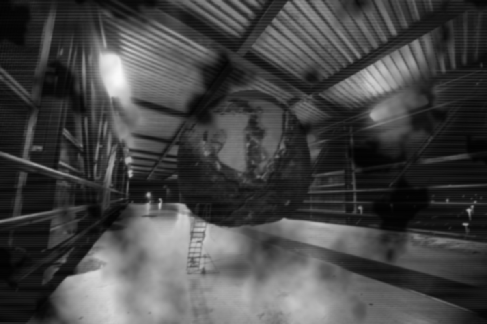

SCP-002

- Item nº:
- SCP-002
- Classe do objeto:
- Euclid
Procedimentos Especiais de Contenção:
O SCP-002 deve permanecer conectado a uma fonte de energia adequada o tempo todo, para mantê-lo no que parece ser um modo de recarga. Em caso de queda de energia elétrica, a barreira de emergência entre o objeto e a instalação deve ser fechada e a área imediata evacuada. Quando a energia da instalação for restabelecida, rajadas alternadas de raios X e luz ultravioleta devem iluminar a área de forma intermitente até que o SCP-002 seja novamente fixado à fonte de energia e retorne ao modo de recarga. A área de contenção deve ser mantida em pressão de ar negativa o tempo todo.
Equipes com no mínimo duas (2) pessoas são obrigatórias a menos de 20 metros do SCP-002 ou de sua área de contenção. O pessoal deve manter contato físico entre si o tempo todo para confirmar que há outra pessoa presente, pois a percepção pode ser embotada, distorcida ou influenciada pela proximidade com o objeto.
Nenhum funcionário abaixo do Nível 3 tem permissão para entrar no SCP-002. Esta exigência pode ser dispensada mediante autorização por escrito de dois (2) administradores de Nível 4 externos à instalação. Membros do comando que receberem tal dispensa devem ser escoltados por no mínimo cinco (5) agentes de Segurança de Nível 3 durante todo o contato e devem entregar temporariamente seu posto e sua autorização de segurança. Após o contato, os membros do comando serão escoltados a pelo menos 5 km do SCP-002 para passar por quarentena de setenta e duas (72) horas e avaliação psicológica. Se considerados aptos para o serviço pela equipe de psicologia, o posto e a autorização de segurança poderão ser restituídos ao fim da quarentena.
Descrição:
O SCP-002 se assemelha a um crescimento carnoso e tumoral, com volume de aproximadamente 60 m³ (ou 2000 pés³). Uma escotilha de ferro em um dos lados leva ao seu interior, que parece ser um apartamento simples e modesto. Uma das paredes do cômodo possui uma única janela, embora nenhuma abertura assim seja visível no exterior. O cômodo contém mobília que, ao exame minucioso, parece ser feita de osso esculpido, cabelo trançado e diversas outras substâncias biológicas produzidas pelo corpo humano. Toda a matéria testada até agora apresenta sequências de DNA independentes ou fragmentadas para cada objeto do cômodo.
Consulte o Relatório Mulhausen [ref. cruzada: documento 00.023.603] para detalhes sobre a descoberta do objeto.
Referência:
Até o momento, o sujeito foi responsável pelo desaparecimento de sete funcionários. Durante sua permanência na instalação, ele também se mobiliou com duas luminárias, um tapete, uma televisão, um rádio, um pufe, três livros em idioma desconhecido, quatro brinquedos infantis e um pequeno vaso de planta. Testes com diversos animais de laboratório, incluindo primatas superiores, não provocaram resposta no SCP-002. Cadáveres também não produzem nenhum efeito. Seja qual for o processo que o sujeito usa para converter matéria orgânica em mobília, ele aparentemente só é ativado pela introdução de humanos vivos.
> ver Relatório Mulhausen [docid:00.023.603]
Relatório Mulhausen [00.023.603]
O relatório a seguir descreve brevemente a descoberta do SCP-002.
O sujeito foi descoberto em uma pequena cratera no norte de Portugal, onde atingiu a Terra vindo da órbita. Envolto em uma casca de rocha espessa, o exterior carnoso do objeto foi exposto pelo impacto. Um fazendeiro local encontrou o local e relatou o que viu ao ancião da aldeia. O sujeito chamou a atenção da SCP quando um agente de Nível 4 posicionado na região detectou uma pequena anomalia radioativa gerada pelo objeto.
Um esquadrão de coleta formado por pessoal de segurança da SCP, liderado pelo General Mulhausen, foi enviado imediatamente à área, onde rapidamente prendeu o sujeito em um grande contêiner e realizou testes iniciais com voluntários recrutados na aldeia vizinha. Três homens enviados individualmente para dentro da estrutura desapareceram em seguida. Ao descobrir essa propriedade letal do sujeito, o General Mulhausen emitiu uma Ordem de Eliminação de Nível 4a contra todas as testemunhas (cerca de 1/3 da aldeia) para garantir que ninguém de fora soubesse do objeto, e iniciou seu transporte para a instalação SCP [DADOS EXPURGADOS].
Durante a preparação para o transporte, quatro agentes de segurança da SCP foram inexplicavelmente puxados para dentro do objeto, onde também desapareceram imediatamente. Após a inspeção, parecia que o objeto havia "cultivado" várias mobílias novas e começava a se parecer com o interior de um quarto de apartamento. O General Mulhausen ordenou imediatamente a requisição de diversos trajes HAZMAT Classe III para os membros restantes da equipe de segurança, que então levantaram o contêiner para um navio de carga que aguardava, rumo à instalação de contenção da SCP.
[DADOS EXPURGADOS]
[DADOS EXPURGADOS]
Após a eliminação do General Mulhausen, o SCP-002 foi novamente contido pela equipe da SCP e levado para contenção especial em [CLASSIFICADO], onde permanece atualmente. Desde o incidente Mulhausen, funcionários com autorização abaixo do Nível 3 estão proibidos de acessar o contêiner do SCP-002 sem aprovação prévia de pelo menos dois funcionários de Nível 4.